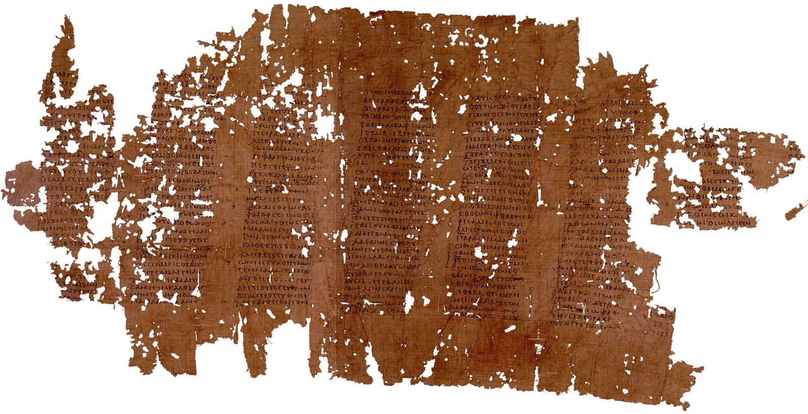
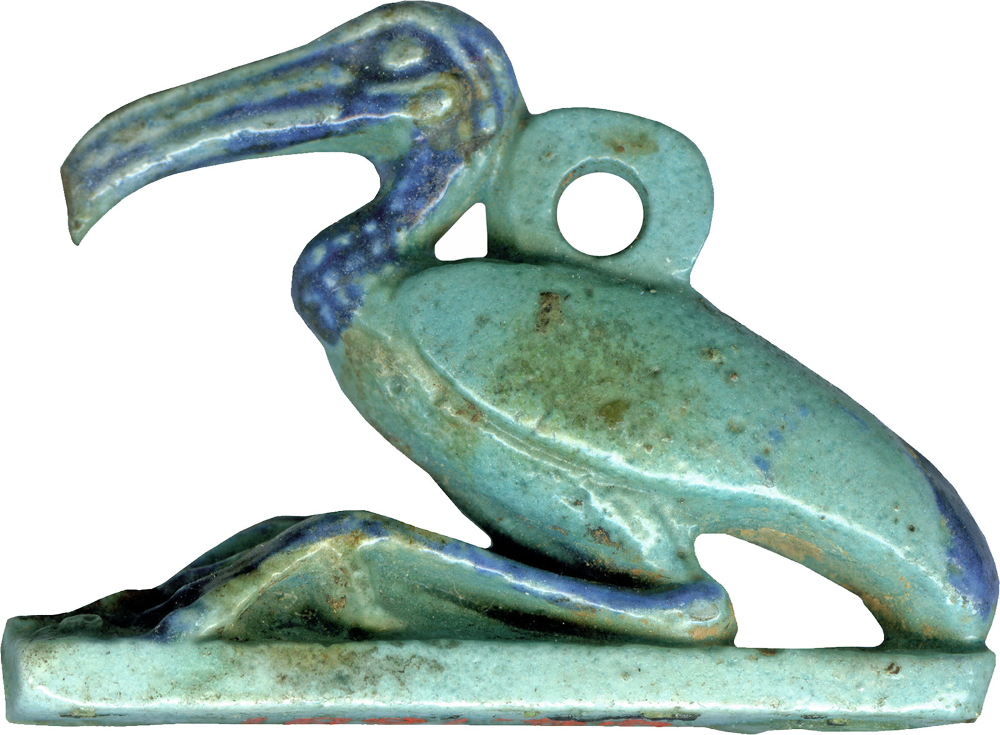
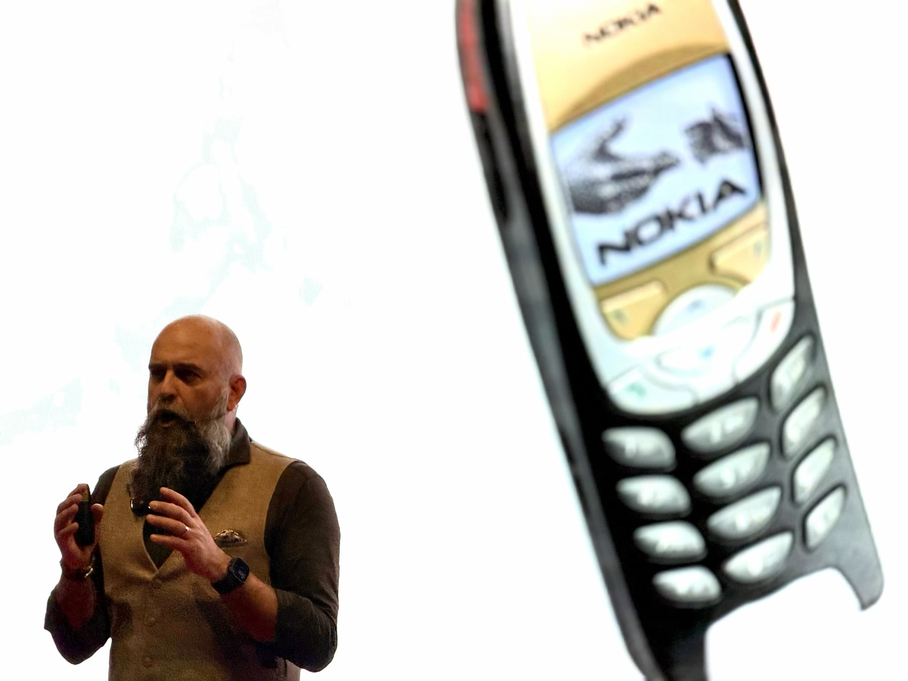
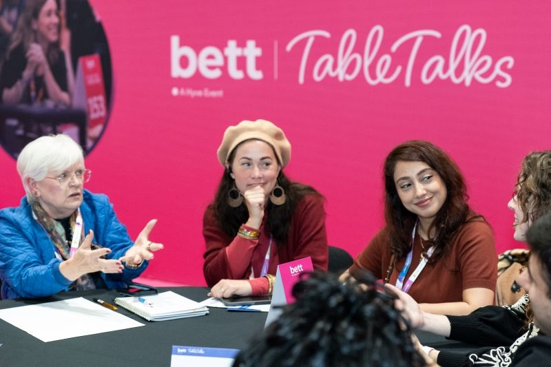

Nummer 1 · Wat is technologie eigenlijk? · verhaal 1 van 4
Nooit neutraal
Een koning die schrift een slecht idee vindt, een historicus met een wet over technologie, en de vraag waarom dezelfde tool in de ene klas werkt en in de andere niet.

Foto: Anonymous ancient scribe · Public domainEen koning die niet blij is
In een van de dialogen van Plato, de Phaedrus uit ongeveer 370 voor Christus, vertelt Socrates een verhaal over de Egyptische god Theuth. Theuth heeft het getal uitgevonden, de rekenkunst, de sterrenkunde en het schrift. Hij laat zijn uitvindingen zien aan koning Thamus en hoopt dat die ze onder het volk zal verspreiden. Over het schrift is hij het meest enthousiast: dit middel, zegt de god, maakt de Egyptenaren wijzer en geeft ze een beter geheugen.
De koning is niet overtuigd. Wie schrift gebruikt, zegt hij, houdt op met oefenen van zijn geheugen. Hij vertrouwt op tekens van buiten in plaats van op wat hij zelf weet. Leerlingen krijgen veel informatie zonder echt onderwezen te zijn, en ze lijken alwetend terwijl ze meestal niets weten. Ze worden, zegt Thamus, schijnwijs in plaats van wijs.

Foto: Anonymous (Egypt)Unknown author · Public domainHet is een aardige ironie dat we dit verhaal alleen kennen omdat Plato het heeft opgeschreven. Zowel de god als de koning hadden iets gezien. Het schrift heeft geheugens niet vernietigd, maar het heeft wel veranderd wat het betekent om iets te weten. Wat is een goede leerling: iemand die alles onthoudt, of iemand die weet waar hij het kan terugvinden?
De eerste wet
Ruim tweeduizend jaar later gaf de Amerikaanse technologiehistoricus Melvin Kranzberg een toespraak voor de Society for the History of Technology. Dat was in 1985, en de tekst verscheen in 1986 in het tijdschrift Technology and Culture. Daarin zette hij zes wetten op een rij, die hij zelf een reeks gemeenplaatsen noemde. De eerste is blijven hangen:
Technology is neither good nor bad; nor is it neutral.Melvin Kranzberg, 1986
Wat Kranzberg bedoelde, is niet helemaal duidelijk. Latere onderzoekers hebben er verschillende dingen in gelezen. De gangbare lezing is dat een technologie niet in zichzelf goed of slecht is, maar dat de uitkomst afhangt van de omstandigheden waarin je haar gebruikt. Daarom is ze ook niet neutraal: dezelfde uitvinding kan in de ene context iets heel anders teweegbrengen dan in de andere, en vaak iets anders dan de maker bedoelde.
Voor het onderwijs is dat een praktische gedachte. Een quizprogramma dat in de ene klas de aandacht vasthoudt, kan in een andere klas een wedstrijd worden die zwakke leerlingen laat afhaken. Een video-uitleg die thuis het tempo van elke leerling respecteert, kan in een klas zonder goede internetverbinding de kloof vergroten. De tool is hetzelfde. De les is anders.
Wat is een tool eigenlijk?
Als je technologie breed opvat, is onderwijs er al eeuwen vol van: het schoolbord, het schrift, het leerboek, het rooster, de toets. Je kunt ook het cijfer en de plaatsing in een jaargroep zo bekijken, als hulpmiddelen om iets te organiseren dat zonder ze anders zou gaan. Het is een keuze om ze bij elkaar te zetten, maar het is een nuttige keuze. Het laat zien dat een tool nooit alleen een apparaat is. Elke tool brengt een manier van werken mee, en die manier van werken vraagt iets van wie hem gebruikt.
Daarom is de vraag bij een nieuwe tool zelden wat hij kan. Bijna alles kan tegenwoordig. De betere vraag is wat hij van een leerling en van een docent vraagt, wat hij overneemt, en wat daardoor verdwijnt of juist verschijnt.

Foto: eigen fotoWat dit betekent voor BETT
Op een beursvloer is elke tool in zijn beste licht gezet, in de handen van iemand die hem goed kent. Dat is wat een demo is. Het zegt niets over een klas van dertig leerlingen op een dinsdagmiddag in februari. De beste vraag voor de reis is dus ook de eenvoudigste: wat doet een leerling hiermee, en wat doet de docent?
Één tool, twee klassen
1 · De opdrachtKies een tool die je zelf gebruikt. Schrijf op wat hij in jouw klas oplevert, en wat hij zou opleveren in de klas van een collega met andere leerlingen, een ander lokaal en een ander tempo.
2 · Met je leerlingenStel de vraag van koning Thamus: mag je bij een toets hulpmiddelen gebruiken, en welke? Laat ze in tweetallen een standpunt kiezen en verdedigen.
3 · Let opHet verschil zit zelden in de tool. Het zit in wat de docent eromheen doet: de opdracht, de instructie en de nabespreking.
4 · Wat het oplevertJe ziet wat jij bepaalt en wat de tool bepaalt, en je hoort wat leerlingen eigenlijk van leren vinden.
Begin bij je eigen klas
1 · Begin bij je klasSchrijf voor je vertrekt in één zin op welke les of welk leerdoel je het meeste tijd kost of het meest onzeker maakt.
2 · Zoek gerichtAlleen tools die bij die ene zin passen. Loop de rest voorbij, ook als het indrukwekkend is.
3 · Vraag doorIn welke klas is dit gebruikt, met welke docent, en wie bepaalt hier wat de leerling doet: de tool of de docent?
4 · Neem mee terugEén zin per stand: past dit bij mijn klas, ja of nee, en waarom? Noteer het op je Bett-kaartje.

Foto: Bett UK · beeld van de Bett-website